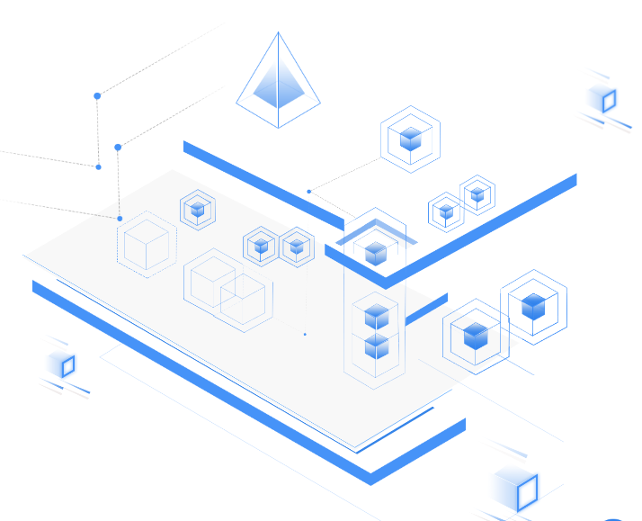

Ý tưởng về công nghệ blockchain bắt đầu hình thành từ đầu năm 1991 khi mà 2 nhà khoa học Stuart Haber và W. Scott Stornetta đã đưa ra một giải pháp điện toán thiết thực dùng cho dấu thời gian các tài liệu số ko thể bị lùi thời gian hoặc giả mạo. Hệ thống này sử dụng một chuỗi mật mã đã được bảo mật để lưu trữ dấu thời gian của các tài liệu.
Năm 1992, họ đã kết hợp sử dụng cây Merkle để làm cho giải pháp này hiệu quả hơn, cho phép tổng hợp các tài liệu một khối. Tuy nhiên, công nghệ này sau đó không được sử dụng và bằng sáng chế bị hết hiệu lực năm 2004.
Năm 1992
Năm 2004
Nhà khoa học máy tính và mật mã học Hal Finney (Harold Thomas Finey II) đã đưa ra 1 hệ thống có tên là RPoW (reusable proof of work). RPoW giải quyết vấn đề double-spending (nói ngắn gọn là một lượng tiền sử dụng hai lần) bằng cách giữ quyền sở hữu token đã được đăng ký trên một máy chủ đáng tin cậy được thiết kế để cho người dùng trên toàn thế giới xác minh tính đúng đắn và toàn vẹn trong thời gian thực. RPoW có thể coi là một bản nguyên mẫu và là một bước tiến đáng kể trong lịch sử tiền mã hóa.

Năm 2008
Một người tự xưng là Satoshi Nakamoto đã phát hành một whitepaper đưa ra khái niệm hệ tiền điện tử ngang hàng phân quyền (a peer-to-peer electronic cash system) gọi là Bitcoin. Trong whitepaper đó, Satoshi Nakamoto đã đề xuất một cơ chế đồng thuật để giải quyết vấn đề double-spending bằng cách sử dụng máy chủ nhãn thời gian phân phối ngang hàng (dạng như block-chain hay là cuốn sổ cái toàn cầu) để sinh ra bằng chứng tính toán cho các giao dịch theo thứ tự thời gian (nguyên văn: “we propose a solution to the double-spending problem using a peer-to-peer distributed timestamp server to generate computational proof of the chronological order of transactions.”). Từ đó đưa ra cơ chế đồng thuật Proof-of-work (PoW – bằng chứng công việc).
Ngày 03/01/2009, Bitcoin chính thức ra đời khối bitcoin đầu tiên. Khởi đầu cho thế hệ Blockchain đầu tiên - Blockchain 1.0 - Tiền tệ và Hệ thống thanh toán.
Blockchain 1.0
Năm 2013
Vitalik Buterin – nhà nghiên cứu tiền mã hóa, lập trình viên kiêm người đồng sáng lập tạp chí Bitcoin tuyên bố Bitcoin cần một ngôn ngữ kịch bản để xây dựng các ứng dụng phi tập trung. Thất bại trong việc đạt thỏa thuận trong cộng đồng, Vitalik bắt đầu phát triển một blockchain mới là Ethereum. Dựa trên nền tảng điện toán phân tán, Ethereum có thể sử dụng ngôn ngữ kịch bản gọi là hợp đồng thông minh. Hợp đồng thông minh (Smart contracts) về cơ bản nó là một thuật toán khi có điều kiện cho trước được đáp ứng đầy đủ thì các điều khoản hợp đồng sẽ được thực thi một cách tự động chính nhờ vậy những người tham gia không cần tin tưởng lẫn nhau, đồng thời nó cũng nhanh hơn và tiết kiệm chi phí cho các bên giao dịch tài chính nhờ không thông qua một bên trung gian nào. Hơn nữa, chúng có thể được sử dụng cho nhiều mục đích. Bên cạnh đó, các nhà phát triển cũng có thể tạo và xuất bản các ứng dụng chạy trên blockchain Ethereum. Các ứng dụng này thường được gọi là DApps (các ứng dụng phi tập trung). Trong tương lai Ethereum sẽ chuyến sang cơ chế đồng thuận PoS (Proof-of-Stake – Bằng chứng cổ phần).
Năm 2015, Ethereum chính thức được phát hành, trở thành đại diện cho Blockchain 2.0 – Tài chính và Thị trường.
Blockchain 2.0
Blockchain 3.0
Nhưng Blockchain 1.0 và 2.0 đang mắc phải rất nhiều vấn đề như tốc độ giao dịch chậm, khả năng mở rộng, sự riêng tư, chi phí đắt đỏ, lỗ hổng bảo mật,… Vì vậy, chúng ta cần một thế hệ blockchain mới ra đời để giải quyết các vấn đề trên đồng thời tận dụng được các tiềm năng mà nó mang lại. Đó chính là Blockchain 3.0 - Thiết kế và Giám sát hoạt động: Đưa Blockchain vượt khỏi biên giới tài chính và đi vào các lĩnh vực như giáo dục, chính phủ, y tế và nghệ thuật.
Khoảng năm 2014, các dự án Blockchain 3.0 đầu tiên đã bắt đầu được xây dựng. Sau đó hàng loạt dự án về Blockchain 3.0 đã ra đời. Tận dụng những tiến bộ công nghệ, kinh nghiệm từ thế hệ Blockchain trước đó, các dự án này mang đến những giải pháp rất thuyết phục cùng với các tính năng vượt trội. Có thể kể đến: Cardano, Zilliqa, EOS, Arcblock, Aion.
Để hiểu thêm Blockchain 3.0 mang lại những công nghệ gì mới, ta thử lấy một ví dụ như EOS. Đầu tiên, EOS sử dụng cơ chế đồng thuận DPoS (Delegated Proof of Stake – bằng chứng ủy quyền cổ phần) giúp tiết kiệm năng lượng, tăng cường khả năng mở rộng, phân cấp vì thế phí giao dịch cũng được giảm tối thiểu. Cũng nhờ thuật toán DPoS, EOS mang đến Cơ chế đóng băng cho phép cộng đồng đóng băng, khắc phục các vấn đề mà không làm gián đoạn các ứng dụng đang chạy. Hơn nữa, các giao dịch trên Blockchain EOS chạy trên các chuỗi song song đã cho phép thực hiện hàng ngàn giao dịch mỗi giây, lý thuyết có thể đạt 1.000.000 giao dịch/giây. Không chỉ dừng lại ở đó Blockchain EOS mang đến rất nhiều tính năng cao cấp khác. Nhưng không chỉ Blockchain EOS mà các dự án khác vẫn còn một vài nhược điểm. Để khắc phục được nó cần một khoảng thời gian khá dài. Chính vì vậy, thời điểm để Blockchain 3.0 bùng nổ, chiếm lĩnh thị trường vẫn chỉ là dự đoán.